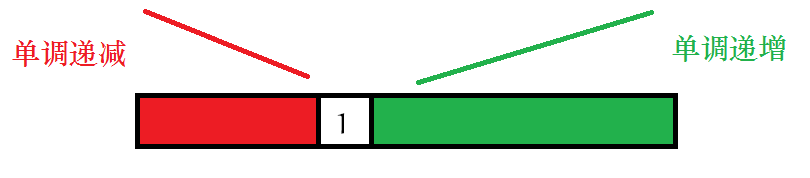
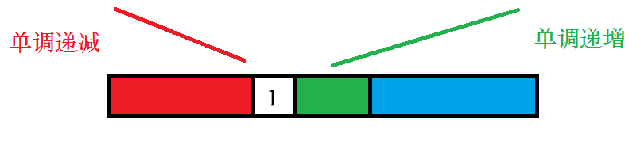

将 1 ∼ n 1\sim n 1 ∼ n 1 1 1 k k k
k ≤ n ≤ 2000 k\le n\le 2000 k ≤ n ≤ 2 0 0 0
根据套路这种计数类题我们应该考虑什么样的序列满足性质。
我们考虑我们是如何构造这段序列的。
一开始，我们将 1 ∼ n 1\sim n 1 ∼ n

然后我们考虑取出后哪些数是可以放在 1 1 1

大概就应该是上图红色和蓝色的（当然分成两段的可能是红色而不是绿色）。
于是我们发现 1 1 1 1 1 1 1 1 1
我们发现如果是这样的话，与 1 1 1 1 1 1
于是我们就可以愉快地 dp 辣！
显然后面那段绿色的我们是可以随便选的，即每次选左边和选右边都可以，也就是 2 n − k − 1 2^{n-k-1} 2 n − k − 1
我们考虑如何 dp 出前面的序列。
一个非常 simple 的想法是令 f i , j , k f_{i,j,k} f i , j , k i i i 1 1 1 j j j k k k x x x
我们有如下贪心：我们尽量把小的数扔给红色序列（因为蓝色序列的最小值越大越可能符合条件）。如果 x < j x<j x < j
但由于我们无法枚举 x x x dp 行不通，但我们得到了一个有趣的贪心策略。
有上面的贪心策略，我们发现只要我们能知道所有合法的 x x x k k k f i , j , k f_{i,j,k} f i , j , k i i i j j j k k k
我们考虑对于一个状态 f i , j , k f_{i,j,k} f i , j , k
选择一个最大的数放入蓝色序列，当然前提条件是存在这个大于 k k k k k k f i , j , k → f i , j + 1 , k f_{i,j,k} \to f_{i,j+1,k} f i , j , k → f i , j + 1 , k 选择一个比 k k k f i , j , k → f i + 1 , j , 1 ∼ k − 1 f_{i,j,k} \to f_{i+1,j,1\sim k-1} f i , j , k → f i + 1 , j , 1 ∼ k − 1 这样做复杂度 O ( n 4 ) \mathcal{O}(n^4) O ( n 4 ) O ( n 3 ) \mathcal{O}(n^3) O ( n 3 )
我们发现我们并不必关心 i i i j j j
我们令 f i , j f_{i,j} f i , j i i i j j j
选择一个最大的数放入蓝色序列。f i , j → f i + 1 , j f_{i,j}\to f_{i+1,j} f i , j → f i + 1 , j 选择一个比 k k k f i , j → f i + 1 , 1 ∼ k − 1 f_{i,j}\to f_{i+1,1\sim k-1} f i , j → f i + 1 , 1 ∼ k − 1 发现第一维可以直接压掉，然后直接 dp 即可。
1 2 3 4 5 6 7 8 9 10 11 12 13 14 15 16 17 18 19 20 21 22 23 24 25 26 27 28 29 30 31 32 33 34 35 36 37 38 39 40 41 42 43 44 #include <iostream> using namespace std ;typedef long long LL;const int maxn = 2005 ;const int mod = 1000000007 ;inline int pow (int a, int b) if (b < 0 ) return 1 ; int ans = 1 ; for (; b; b >>= 1 , a = (LL) a * a % mod) if (b & 1 ) ans = (LL) ans * a % mod; return ans; } int dp[maxn];int main () int n, k; cin >> n >> k; dp[n + 1 ] = 1 ; for (int i = 1 ; i <= k; ++i) { for (int j = n; j; --j) { if (n - j + 1 < i) dp[j] = 0 ; else { dp[j] = dp[j + 1 ] + dp[j]; if (dp[j] >= mod) dp[j] -= mod; } } } cout << (LL) dp[1 ] * pow (2 , n - k - 1 ) % mod; return 0 ; }